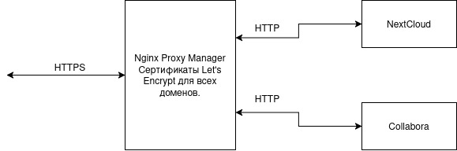
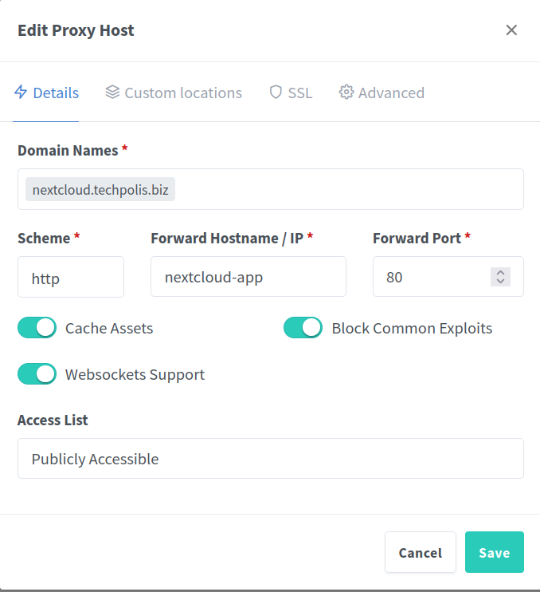
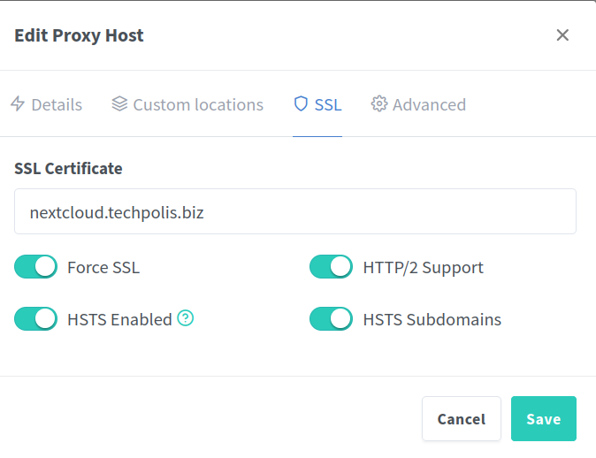
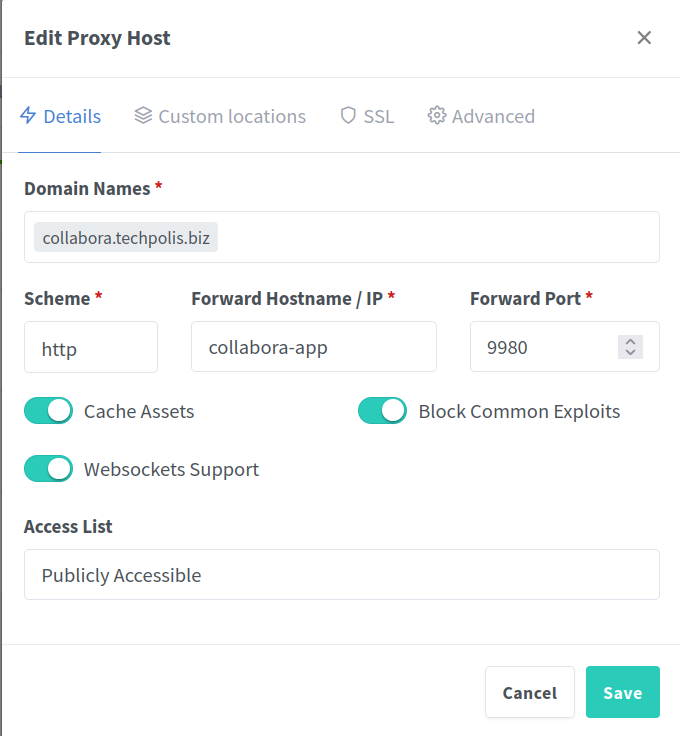
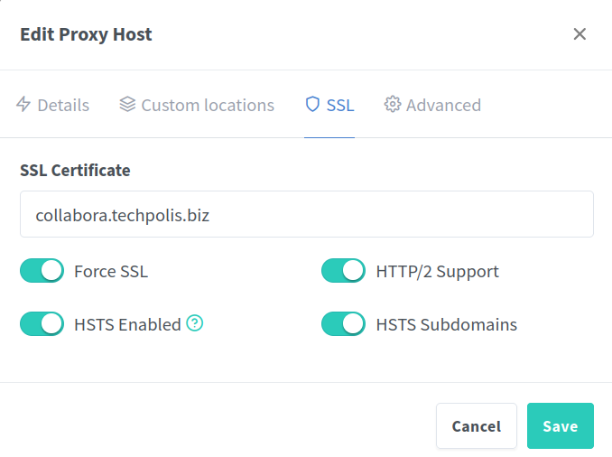

Задача следующая:

На входе Nginx Proxy Manager (NPM), должен получать сертификаты от Let's Encrypt.
Тут первая странность - я не могу пробросить стандартные порты 80 и 443. Если что то за ними стоит то пакеты снаружи приходят,
но соедиенение не устанавливается.
При этом NPM через 80 порт получает сертификаты. Это тема дальнейшего исследования.
Возможно, виноват роутер. Но маловероятно.
Все разворачиваем в докере
Контейнер NPM будет работать с базой в нутри на sqlite. Обычно везде предлагается MySQL, но у нас маленький пул адресов.
environment:
DB_SQLITE_FILE: "/data/npm.sqlite"
Контейнер NextCloud связан с db MySQL в отдельном контейнере. И с Redis для кеширования. Долно ускорять работу, пока не настраивал.
Контейнер Collabora
Все три контейнера работают в одной подсети, наружу проброшены только порты 80,81,443 от NPM. Все обращения внцтри идут через внешний домен
либо внутри docker по имени контейнера
Настройка NPM:


В общем то больше настраивать нечего.